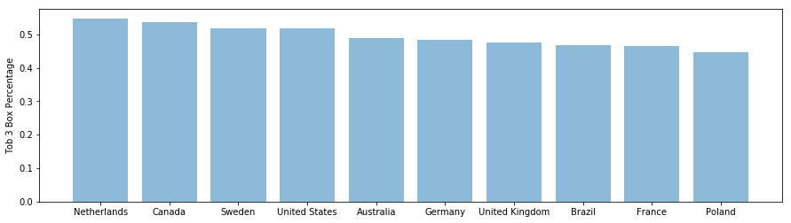

POSTS
Are you satisfied with your job as a developer?

Introduction
Tech industry has been booming for years. We hear a lot of stories of peaks such as competitive salaries, work-life balance, unlimited vacation one can get working in a tech company. But are the employees really happy with their jobs? What drives their satisfaction and what makes them to leave?
I used data from Stackoverflow’s 2017 Annual Developer Survey to investigate this problem.
This survey has around 64000 reviews from 213 countries. The survey’s responses are mostly collected from developers and the questions asked in the survey are related to many aspects of developer’s job and career. Some of the aspects covered:
1) How do they break into this field at the first place?
2) The developer’s education, especially coding background
3) The developers’ job responsibility and satisfaction
4) What makes them to looking for new opportunity? What they value most when they look for the next position?
5) The developers’ interaction with Stackoverflow.
Here I am interested in dig dive into data to figure out three problems.
Part I How satisfied are you as a developer ?
There is one rating question in the survey asking about the job satisfaction. The answer is rated from 0-10 which 10 represents highly satisfied and 0 represents highly dissatisfied. I first filter out responses with NA values. Below is a table showing the response counts and percentage for each rating.
| Job Satisfaction | Rating Counts | Percentage |
|---|---|---|
| 8.0 | 8983 | 22.25% |
| 7.0 | 7969 | 19.74% |
| 9.0 | 5573 | 13.8% |
| 6.0 | 4726 | 11.7% |
| 10.0 | 4148 | 10.27% |
| 5.0 | 3749 | 9.29% |
| 4.0 | 1865 | 4.62% |
| 3.0 | 1635 | 4.05% |
| 2.0 | 888 | 2.2% |
| 0.0 | 467 | 1.16% |
| 1.0 | 373 | 0.92% |
Here, I used a metric called ‘top 3 box’ to measure satisfaction. A Top 3 Box score summarizes the positive responses from a scale survey question. It combines the highest 3 responses of the scale to create one single number.
Below plot shows the job satisfaction by country using the metric top 3 box. The countries I selected here have a response threshold of 500.

Top countries for satisfaction score are Netherlands, Canada, Sweden and United States. All these four countries has over 50% top 3 box score.
Part II Does salary drive satisfaction? Is there anything else?
There are many factors which can drive job satisfaction, such as salary, health benefits and vacation. To figure out does salary drives job satisfaction. I check the average salary of the top five countries which has the highest average salary.
Below tables shows the average salary of these countries.
| Country | Average Salary |
|---|---|
| United States | 86862.40 |
| Canada | 60821.54 |
| United Kingdom | 56086.99 |
| Germany | 44121.32 |
| India | 11603.47 |
The top countries with high average salaries also have a high job satisfaction (except India). Salary does have some impact on the job satisfaction. In addition to salary, does the benefits also influence employees’s satisfaction?
One of the survey’s question is:
When it comes to compensation and benefits, other than base salary, which of the following are most important to you?
The following table shows the counts of each factors people think is most important to them.
| Important Benefits | Counts |
|---|---|
| Vacation/days off | 5757 |
| Health benefits | 4455 |
| Expected work hours | 4288 |
| Remote options | 5008 |
| Retirement | 2658 |
| Annual bonus | 2983 |
| Equipment | 4002 |
| Professional development sponsorship | 3615 |
| Stock options | 1300 |
| Child/elder care | 694 |
| Long-term leave | 1240 |
| Meals | 1258 |
| Other | 247 |
| Private office | 872 |
| Education sponsorship | 1287 |
| Charitable match | 199 |
| None of these | 82 |
The top three factosr are vacation, health benefits and expected work hours.
Part III Why people leaved their job?
To figure out why people are leaving their job, I took a closer look at below question in the survey.
You said before that you used to code as part of your job, but no longer do. To what extent do you agree or disagree with the following statements?
The top three reasons for people to quit coding are:
1) I don’t think my coding skills are up to date
2) If money weren’t an issue, I would take a coding job again
3) My career is going the way I thought it would 10 years ago
and they counts for 17%, 17% and 15% of the total respectively.
The technical skills is the most essential for developer. One need to keep updated for their coding skills. Just as important as coding skills, money also factors into developer’s career decision. At the same time, some of the developers are looking for a career change and they do want to try out different things. That is also one reason they left their job.